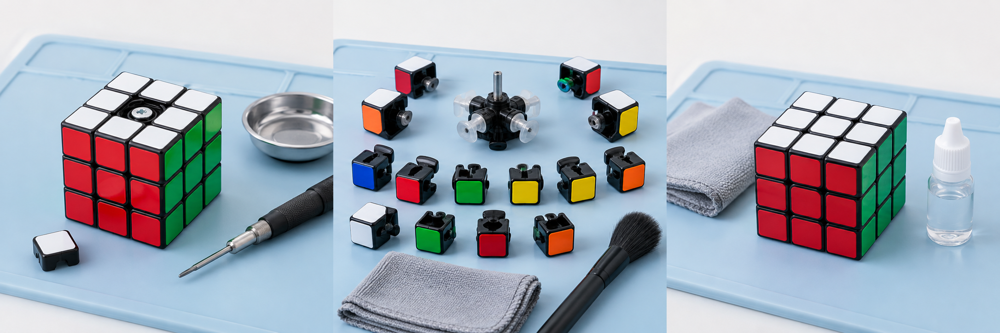

Enlever le cache central
Ongle ou outil en plastique
À l’aide de ton ongle ou d’un petit outil en plastique, retire délicatement le cache situé au centre d’une face du Rubik’s Cube.
Entretien du cube
Enlève la poussière et les résidus de lubrifiant pour retrouver un cube propre et fluide. Suis les étapes de démontage, nettoyage, séchage et remontage de ton Rubik’s Cube 3x3.
Avant le premier geste
Un espace propre et bien éclairé. Les petites pièces vont dans la coupelle.

Ongle ou outil en plastique
À l’aide de ton ongle ou d’un petit outil en plastique, retire délicatement le cache situé au centre d’une face du Rubik’s Cube.
Tournevis + coupelle
À l’aide du tournevis, dévisse la vis située sous le cache central.
Place la vis, le ressort et le cache dans la coupelle pour éviter de les perdre.
Coupelle à portée de main
Retire d’abord une arête, puis les autres pièces : arêtes, coins et centres, jusqu’à ce que le cube soit entièrement démonté.
Ne force pas : les pièces doivent se retirer facilement une fois la première enlevée.
Chiffon + brosse souple
Retire la poussière et les résidus d’ancien lubrifiant avec un chiffon doux ou une brosse souple.
Si nécessaire et si la notice de ton modèle le permet, passe un chiffon à peine humidifié avec de l’eau tiède et un peu de savon doux sur les pièces en plastique.
Essuie les pièces, puis laisse-les sécher complètement avant le remontage.
Nettoie également le mécanisme interne à l’aide d’un chiffon sec ou d’un coton-tige.
Lubrifiant spécial cube
Cette étape est facultative, mais elle peut rendre le cube plus fluide.
Applique une petite quantité de lubrifiant spécial Rubik’s Cube sur les parties en contact.
N’en mets pas trop : quelques gouttes suffisent.
Tournevis + pièces rangées
Replace les pièces dans l’ordre inverse du démontage.
Revisse ensuite le centre sans trop serrer afin que le cube reste fluide.
Remets enfin le cache central en place.
Ton cube remonté
Tourne les différentes faces plusieurs fois.
Le cube doit tourner facilement, sans bloquer ni être trop lâche.
Si nécessaire, ajuste légèrement le serrage de la vis centrale.
Étape 1 sur 7
Visuels de maquette générés, à remplacer par des photos réelles avant publication. Ils ne constituent pas une référence technique de démontage.
Les bons réflexes
Nettoyage, séchage et lubrification.
Oui, pour l’extérieur : essuie les faces avec un chiffon microfibre et retire la poussière accessible avec une brosse souple. Ce nettoyage rapide ne retire pas les résidus de lubrifiant à l’intérieur. Pour un entretien complet, suis le démontage adapté à ton modèle.
Ne plonge pas le cube assemblé dans l’eau. Pour les saletés tenaces, utilise un chiffon à peine humide et un peu de savon doux sur le plastique, si la notice le permet. Garde le mécanisme métallique au sec et laisse tout sécher complètement avant le remontage.
Choisis un lubrifiant spécial cube compatible avec ton modèle, souvent à base de silicone. Applique une petite quantité sur les surfaces de contact propres et sèches, puis tourne les faces pour le répartir. Évite les huiles domestiques et le WD-40.
La poussière et l’ancien lubrifiant peuvent gêner les rotations. Un excès de lubrifiant peut aussi rendre le cube collant. Nettoie les pièces, vérifie le remontage et les réglages prévus par le fabricant. N’ajoute pas systématiquement du lubrifiant et ne force pas sur un blocage.
Adapte l’entretien à ton utilisation plutôt qu’à un calendrier fixe. Nettoie quand tu vois des saletés ou que les rotations deviennent moins fluides. Entre deux nettoyages complets, un chiffon sur les faces et un rangement dans une housse ou une boîte limitent l’accumulation de poussière.
Références d’entretien : nettoyage et précautions (SpeedCubeShop), entretien courant (SpeedCubeShop) et lubrification (GANCUBE).